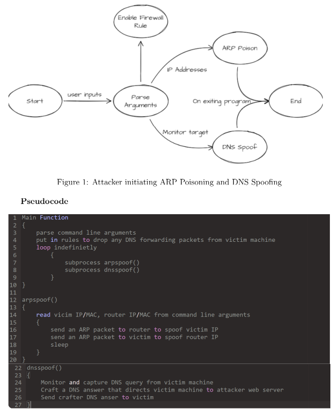
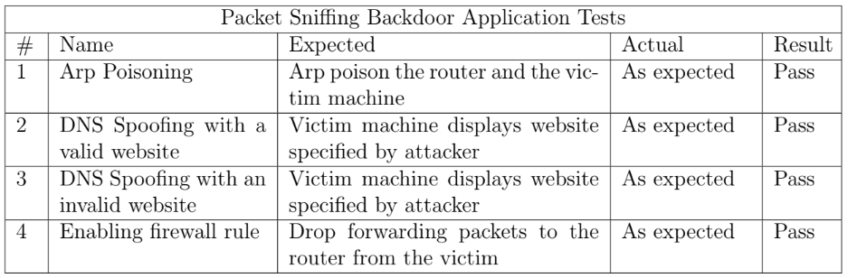
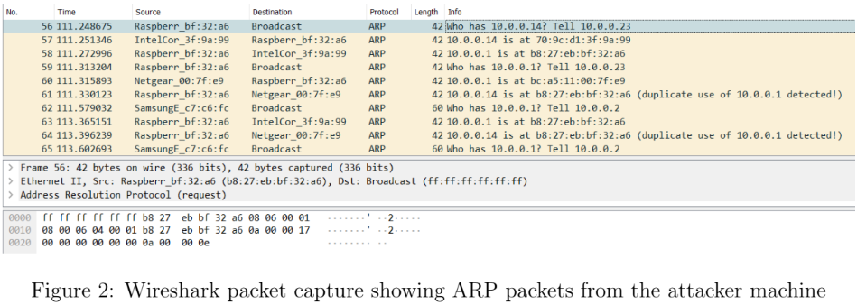
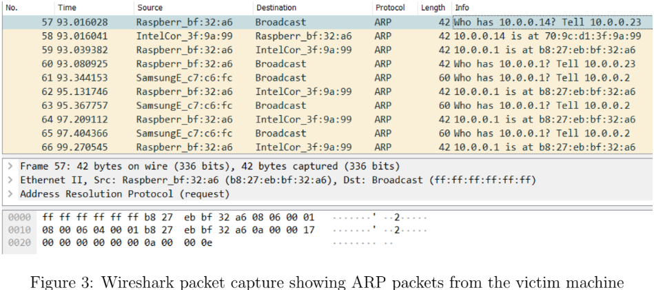
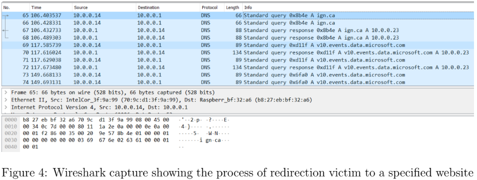
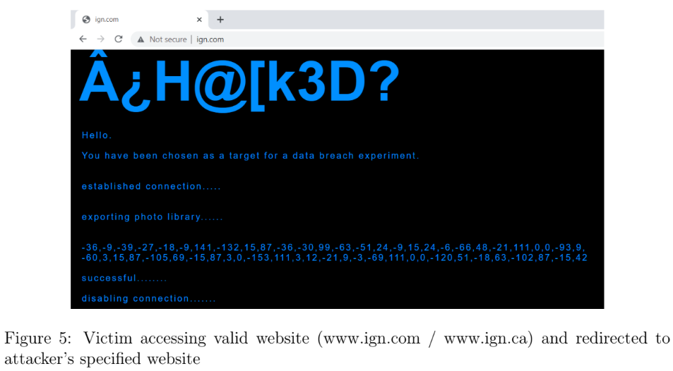
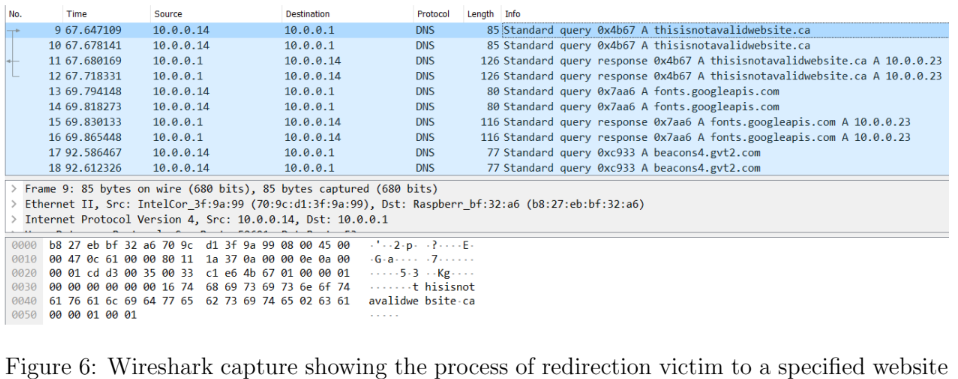
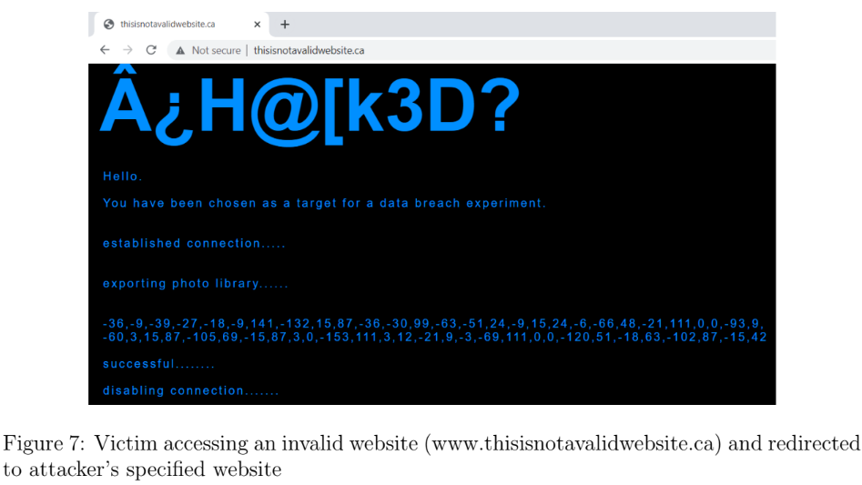
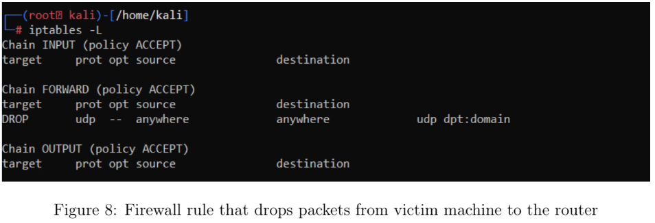

Objective
In this experiment a basic DNS spoofing application was to be designed and provide features that intercepts traffic by performing a man-in-the-middle (MITM) attack using ARP poisoning and replying to all DNS queries with a specified IP address. The experiment will involve two separate machines to emulate a DNS Spoofing scenario, which includes an attacker and the victim machine.
The attacker will leave a low footprint when performing the MITM attack by only sending ARP requests and replies to the victim and the local router. The DNS Spoofer application will gather the appropriate MAC addresses and enable a firewall rule that will drop any DNS outgoing forwarded packets from the DNS to ensure that the router never gets anything from the victim. Every DNS query sent by the victim will be provided a crafted reply and the attacker has the ability to redirect DNS replies to any chosen IP address that hosts their server.
Constraints
- The application will simply sense an HTML DNS Query and respond with a crafted Response answer, which will direct the target system to attacker web site.
- Test POC on a LAN on own systems only. Do not to carry out any DNS spoofing activity on unsuspecting client systems
- Required to handle any arbitrary domain name string and craft a spoofed response.
Approach
The DNS Spoofer will send pings to the router and target machine to obtain the MAC adresses. Once received, the application will perform a MITM attack by ARP poisoning the target and router to have them believe they exist at the attacker machine. Once a MITM connection is establish, all DNS queries sent from the target machine will be sent a response redirecting them to IP address hosting the web server.
The program was written in python using the Scrapy library, a packet crafting API. The primary script is:
- main.py – the DNS spoofer and ARP poisoner
Lanugage & Libraries
- Language: Python v3.9
- Packet crafting & sniffing library: Scapy v2.4.5
State Machine Diagram & Pseudocode
Usage
To run the program, type the following command on the machine that will be used as the “attacker”:
- python3 main.py -v [Victim IP] -r [Router IP] -i [own machine IP] -g [IP of the targetwebsite]
- -v expects the IP address of the target machine
- -r expects the IP address of the router
- -i expects the IP address of the machine running the DNS spoofer (attacker)
- -g expects the IP address that the target should be redirected to
Testing
Test Video: Attacker POV
Test Video: Victim POV
Test 1: Arp Poisoning
The purpose of ARP spoofing is so the victim will be sending the DNS requests to the attacker machine first, instead of directly routing it into the Internet. As shown below from both perspective of the interacting machines, the attacking machines takes the place of another host (the router) and begins intercepting data frames on the network corresponding with its target.
 Both Wireshark captures from the attacker and victim show that the attacker has successfully taken the place of the router and intercepts the data frames on the network.
Test 2: DNS Spoofing with a valid website
This part of the experiment corrupts the Domain Name System as data is being introduced into the DNS resolver's cache, causing the name server to return an incorrect result record. The record's below show that the traffic from the victim machine is being diverted to the attacker's intended web server.
 Any request made from the victim machine to access a valid or web address will receive a valid DNS response from the attacker machine to redirect it to the IP address hosting the web server. When the address is typed into the browser, a fake page of the attacker will show instead.
Test 3: DNS Spoofing with an invalid website
 The same results can be seen when the victim machine tries to access an invalid web address, the victim machine will receive a valid DNS response from the attacker machine to redirect it to the IP address hosting the web server. When the address is typed into the browser, a fake page of the attacker will show instead.
Test 4: Enabling firewall rule
This rule was established to drop all DNS packets made from the victim machine to the router in case the DNS Spoofer application was slower than the router in response. This rule guarantees that only the attacker machine can make a legitimate reply back to the victim without any conflicting packets.
Conclusion
This project highlights the complexity of developing an application to Spoof DNS Queries, however, the use of Scrapy library in python streamlines the process as functions are pre-defined and set up to use. A typical scenario for this application would be in utilizing it for social engineering to initiate an attack. If a target was utilizing a Wireless Local Area Network, such as at a cafe, the attacker can use their DNS Spoofer to redirect the victim to a compromised page that will prompt the victim to download an exploit or save vital information. This kind of tool can also be used effectively for censoring web pages on a wide scale, and the experiments from this project gives us a taste on blocking a single user from accessing any and all websites.
Source code
The project source code can be found here .